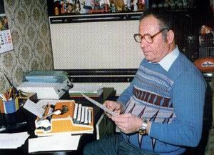

pučki pjesnik · folk poet · Sopje 1933. – Valpovo 2015.Sopje 1933 – Valpovo 2015
Hrvatski · izvornikEnglish · translation
Životopis
Biography
Od Sopja do Valpova
From Sopje to Valpovo

Za pisaćim strojem, u svojoj kući u Valpovu At his typewriter, at home in Valpovo
Ivan Benak rođen je 29. srpnja 1933. u Sopju, selu uz Dravu u slavonskoj Podravini. Ondje je završio osnovnu školu, a srednju poljoprivrednu školu u Slatini. Poslije je završio i školu za visokokvalificiranog vozača cestovnog prometa.
Ivan Benak was born on July 29, 1933 in Sopje, a village by the Drava river in the Slavonian Podravina. He finished primary school there and went on to the agricultural secondary school in Slatina. Later he also qualified as a highly skilled professional driver.
Od 1956. živio je u Valpovu, gdje je trideset i šest godina, sve do umirovljenja, radio u Domu zdravlja kao vozač hitne pomoći. U Valpovu je sa suprugom Jelkom (1931.–2020.) podigao dvoje djece i dočekao unuke, kojima je napisao mnoge pjesme. Godine 2010. o pedeset i sedam godina braka zapisao je u stihu: „Žena mi je dobra bila, / dvoje djece podarila.“
From 1956 he lived in Valpovo, where for thirty-six years, until he retired, he worked at the health centre as an ambulance driver. In Valpovo he and his wife Jelka (1931–2020) raised two children and lived to see grandchildren, for whom he wrote many poems. In 2010 he wrote of fifty-seven years of marriage: “My wife has been good and true, / and she gave me children two.”
Njegovo teško djetinjstvo u Ritskoj Adi i put do Valpova opisala je njegova kći Suzana Vida u Životnoj priči.
His hard childhood in Ritska Ada and his road to Valpovo are told by his daughter, Suzana Vida, in The Life of Ivan Benak.
Pjesnik koji piše rime
A poet who writes rhymes
Pisao je od rane mladosti. Jednu od svojih prvih pjesama, Ne budi me, majko, rano, napisao je kao mladić, oko 1950., a gotovo četiri desetljeća kasnije ona je, uglazbljena, izvedena na Splitskom festivalu. Pjesme su mu desetljećima izlazile u radničkim novinama, časopisima, revijama i biltenima, a čitao ih je u kazalištu u Belišću i na Radio Valpovštini.
He wrote from early youth. One of his first poems, Don't Wake Me Early, Mother, he wrote as a young man, around 1950, and almost four decades later, set to music, it was performed at the Split Festival. For decades his poems appeared in workers' newspapers, magazines, reviews and bulletins, and he read them at the theatre in Belišće and on Radio Valpovština.
Prvu knjigu, Mali snovi, objavio je 1988., s pedeset i pet godina. Slijedile su Zekina sreća (1990.), Valpovački bećarac (1993.), Odjeci srca (2001.), Žablji sastanak (2005.) i Stihom kroz život (2010.). Opus mu je bogat i raznolik, od ljubavnih i domoljubnih do protestnih i humorističnih pjesama, no kritičari su se složili da je najuspješniji bio u dječjem pjesništvu. Njegove dječje pjesme djeca i danas uče napamet.
He published his first book, Little Dreams, in 1988, at the age of fifty-five. It was followed by Bunny's Luck (1990), The Valpovo Bećarac (1993), Echoes of the Heart (2001), The Frogs' Meeting (2005) and Through Life in Verse (2010). His work is rich and varied, from love poems and patriotic verse to protest and humorous poems, but critics agreed that he was at his best as a poet for children. Children still learn his poems by heart.
Prema njegovu posljednjem životopisu, četrnaest mu je pjesama uglazbljeno, među njima i himne općina Petrijevci i Marijanci te himna valpovačkog vrtića „Maza“. Bio je pridruženi član Hrvatskog društva skladatelja, a recenzirao je petnaestak knjiga drugih pjesnika.
By the count in his last biography, fourteen of his poems were set to music, among them the anthems of the municipalities of Petrijevci and Marijanci and the anthem of the Maza kindergarten in Valpovo. He was an associate member of the Croatian Composers' Society, and he reviewed some fifteen books by other poets.
Poeta i sijela
Poeta and the poetry evenings
Godine 1992. osnovao je Društvo stvaratelja poezije „Poeta“ Valpovo, koje i danas djeluje kao pjesnička sekcija HKUD-a „Valpovo 1905.“, i bio mu je prvi predsjednik. Godine 1993. s HKUD-om je utemeljio Sijelo pučkih pjesnika Valpovštine. Od 2000. do 2005. vodio je pjesničko sijelo u Bocanjevcima, a 2005. pokrenuo je Festival dječje poezije u SOS dječjem selu Ladimirevci.
In 1992 he founded the Poeta society of poetry writers in Valpovo, which still exists as the poetry section of the Valpovo 1905 cultural society, and he was its first president. In 1993, together with the society, he established the Folk Poets' Evening (Sijelo pučkih pjesnika) of the Valpovo region. From 2000 to 2005 he ran the poetry evening in Bocanjevci, and in 2005 he started the Children's Poetry Festival at the SOS Children's Village in Ladimirevci.
Bio je redoviti gost pjesničkih večeri i sijela diljem Slavonije, s pedeset do osamdeset nastupa godišnje. Obilazio je vrtiće, škole, domove za starije i nemoćne, udruge umirovljenika, crkve, kulturno-umjetnička društva, radio i televiziju. Samo 2008. i 2009. nastupio je 106 puta. Prijatelji pjesnici zvali su ga „legendom slavonskog pjesništva“.
He was a regular guest at poetry evenings and gatherings all over Slavonia, with fifty to eighty readings a year. He visited kindergartens, schools, old people's homes, pensioners' associations, churches, folk-culture societies, radio and television. In 2008 and 2009 alone he gave 106 readings. His fellow poets called him “a legend of Slavonian poetry”.
Priznanja
Honours
Za svoj rad dobio je više od stotinu i pedeset priznanja, zahvalnica i diploma. Najdraža mu je bila diploma HKUD-a „Valpovo 1905.“ za promidžbu kulture na području Valpovštine.
For his work he received more than a hundred and fifty awards, certificates of thanks and diplomas. The one he treasured most was the diploma of the Valpovo 1905 society for promoting culture in the Valpovo region.
Kronologija
Chronology
1933. — rođen 29. srpnja u Sopju
1933 — born on July 29 in Sopje
1951. — u Belišću upoznaje buduću suprugu Jelku
1951 — meets his future wife, Jelka, in Belišće
1956. — seli se u Valpovo, gdje trideset i šest godina vozi hitnu pomoć
1956 — moves to Valpovo, where he drives an ambulance for thirty-six years
1987. — u Vinkovcima upoznaje pjesnika Luku Jokića; počinje dugo prijateljstvo
1987 — meets the poet Luka Jokić in Vinkovci, the start of a long friendship
1988. — prva knjiga, „Mali snovi“ (Vinkovci)
1988 — first book, “Little Dreams” (Vinkovci)
1989. — „Ne budi me, majko, rano“ na Splitskom festivalu (Ivo Pattiera i Zlatni dukati)
1989 — “Don't Wake Me Early, Mother” at the Split Festival (Ivo Pattiera and Zlatni dukati)
1990. — „Zekina sreća“
1990 — “Bunny's Luck”
1992. — osniva društvo „Poeta“ Valpovo
1992 — founds the Poeta society in Valpovo
1993. — „Valpovački bećarac“; utemeljuje Sijelo pučkih pjesnika Valpovštine; „Zelene su oči tvoje“ u Požegi
1993 — “The Valpovo Bećarac”; establishes the Folk Poets' Evening of the Valpovo region; “Green Are Those Eyes of Yours” in Požega
1994. — „Pod granama jorgovana“ na festivalu Zlatne žice Slavonije
1994 — “Beneath the Lilac Boughs” at the Zlatne žice Slavonije festival
2001. — „Odjeci srca“
2001 — “Echoes of the Heart”
2005. — „Žablji sastanak“; pokreće Festival dječje poezije u SOS dječjem selu Ladimirevci
2005 — “The Frogs' Meeting”; starts the Children's Poetry Festival at the SOS Children's Village in Ladimirevci
2010. — šesta knjiga, „Stihom kroz život“
2010 — his sixth book, “Through Life in Verse”
2011. — plaketa Općine Sopje
2011 — plaque of the Municipality of Sopje
2012. — nominacija za Srednjoeuropsku enciklopediju književnosti; nagrada Europske godine aktivnog starenja; prijedlog za Naj-seniora „Mlad u srcu“; 3. prosinca: Zlatna plaketa „Pečat Grada Valpova“ za životno djelo
2012 — nominated for the Central European Encyclopaedia of Literature; award of the European Year of Active Ageing; nominated as Senior of the Year, “Young at Heart”; December 3: the Gold Plaque “Seal of the Town of Valpovo” for his life's work
2015. — posljednja datirana pjesma, „Stiglo nam i Vincekovo“ (22. siječnja); umire u Valpovu 11. svibnja
2015 — last dated poem, “Now St Vincent's Day Has Come” (January 22); dies in Valpovo on May 11
— — plakete općina Petrijevci i Marijanci za njihove himne
— — plaques of the municipalities of Petrijevci and Marijanci for their anthems
Posljednje godine
Last years
Pisao je i nastupao do kraja života. „I starački došli dani, / nema zdravlja kao prije, / ali srce moje gordo, / ukrotila starost nije.“
He went on writing and reading until the end of his life. “Now the days of age are here, / and my health is not the same, / yet my heart, as proud as ever, / age has never learned to tame.”
Ivan Benak umro je u Valpovu 11. svibnja 2015., u osamdeset i drugoj godini. Pokopan je na valpovačkom groblju (karta groba).
Ivan Benak died in Valpovo on May 11, 2015, in his eighty-second year. He is buried in the Valpovo cemetery (map of the grave).
Davne 1983. napisao je Pjesnikovu želju: „Jednom kada odem / u rajska blaženstva / ponekada dođi, / moj grob obiđi. / Karanfilom bijelim / humak mi podari.“
Back in 1983 he wrote The Poet's Wish: “Some day, when I've gone / to the bliss of heaven, / now and then, come round, / visit where I lie. / With a white carnation / grace my mound below.”
Da biste me upoznalii o meni nešto znali,reći ću vam ime mojei podatke dati svoje.Ivan Benak mi je ime,pjesnik koji piše rime.Ulica se pisat mora -Pejačević slavna Dora,ako netko me potraži,moje kuće broj pet važi.Još dodajte mjesto moje,znajte, slavno Valpovo je.A telefon stalno vrijedan:nula trideset jedan,šesto pedeset dva,osamsto dvadeset jedan.Ja ne skrbim kruh u znoju,mirovinu imam svoju.I kućicu svoju imam,pa u noći divno snivam,preko dana u njoj dišemi tu svoje pjesme pišem.Mnoge pjesme rimovao,šest knjiga vam darovao,Tri su knjige razne teme,tri za djecu, bez dileme.Sedam pjesama uglazbljeno,tamburicom izvezeno.Eto, to sam ja uživo,iz Valpova pjesnik Ivo!
So that you may know me better,learn about me to the letter,I will give my name to youand my personal details too.Ivan Benak is my name,poet: rhyming is my aim.Then my street you must write down:Dora Pejačević of renown;should somebody come to seek me,number five is where you'll meet me.Add my town, that you may know:it's the famous Valpovo.And the phone, a trusty one:zero thirty-one,six hundred fifty-two,eight hundred twenty-one.I no longer sweat for bread,I've my pension now instead.And my little house is mine,where at night I dream so fine;there by day I breathe and dwell,there I write my poems as well.Many poems I made rhyme,six books gave you in my time:three books, themes of every kind,three for children, you will find.Seven of my poems sing,stitched on tamburica string.There you have me, head to toe:Ivo, poet of Valpovo!
Valpovo, 14.02.2006.
Valpovo, February 14, 2006
Telefonski broj iz pjesme više nije u upotrebi.
The phone number in this poem is no longer in use.